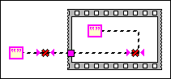

A tunnel serves as either an input or an output from a structure. When the source of the wire is inside the structure, the tunnel is an output. When the source is outside the structure, the tunnel is an input. If a source is connected on both sides of the structure or no source is connected, the tunnel cannot decide the direction of dataflow.
To correct this error, you must ensure that a data source is only connected to one side of the tunnel.